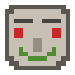

Vur ve izle
Golem eline demir blok alır, yanına gelir ve altına bloklar koyarak tırmanır. Tırmanış bitene kadar kimseye vuramaz.
Bir demir golemine vur ve onunla birlikte bitmeyen bir yükselme döngüsüne takıl. Sadece sunucu tarafında çalışır; oyuncuların bilgisayarına kurulsa da sorun çıkarmaz.

Iron Golem Troll, Minecraft 26.2 için sunucu taraflı bir Fabric modu. Bir demir golemine vurduğunda golem eline bir demir blok alır, hemen yanına yürür ve altına demir blok koyarak 3 blok yukarı tırmanır. Kuleni yükseltip tekrar vurursan golem 3 blok daha tırmanır; böylece sonsuza kadar yükselen bir demir kule oluşur.
Golem eline demir blok alır, yanına gelir ve altına bloklar koyarak tırmanır. Tırmanış bitene kadar kimseye vuramaz.
Golem zaten yanında olduğu için her yeni vuruşta yeniden tırmanır; kule sen vurdukça yükselir.
Golemin koyduğu demir bloklar kalıcıdır ve normal demir blok gibi kırılabilir.
Sunucuya kurman yeterli; oyuncuların modu kurması gerekmez. Kursalar da sorun çıkmaz.
config/iron_golem_troll.json ile trolü açıp kapatabilir, her vuruşta kaç blok tırmanacağını ve en uzak vuruş mesafesini ayarlayabilirsin. Uzaktan atılan oklar tırmanış başlatmaz.
Operatörler /igtroll on, off ve toggle ile trolü açıp kapatır; /igtroll reload ayarları yeniden okur, /igtroll status durumu gösterir.
İpucu: MehburMC Launcher ile Fabric profilini tek tıkla kurabilir, modları Mod Toggle ile açıp kapatabilirsin. Launcher'a göz at →
İndirdiğin dosyanın benim yayınladığımla birebir aynı olduğunu kontrol etmek için dosyanın bulunduğu klasörde PowerShell'i açıp şu komutu çalıştır:
Get-FileHash .\iron-golem-troll-1.0.0.jar -Algorithm SHA256Çıkan SHA-256 değeri bununla aynı olmalı:
2074b81012c51d4f366cabdeaed8db21033c6f625a0831a137b7d1f58272fe93